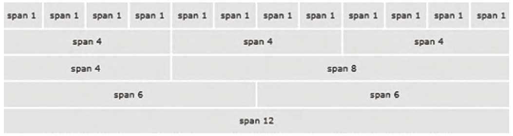
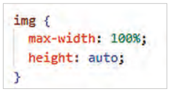

بوتاسترپ دارای یک سیستم شبکهبندی با نام Grid است که توسط Flexbox ایجاد شده است و امکان تقسیم پهنای صفحه را به 12ستون فراهم میکند. هر سلول در این شبکه میتواند محتوای بخشی از صفحه را درون خود نگه دارد. سیستم Grid امکان گروهبندی ستونها را برای ایجاد ستونهای عریضتر فراهم میکند بهطوریکه فضای کافی برای قرار دادن محتوا درون یک ستون موجود باشد. سیستم Grid واکنشگرا است و بسته به اندازه صفحه، ستونها را بهطور خودکار مرتب میکند.

استفاده از کلاسهای شبکهبندی (rows و columns)
برای ایجاد سطرها و ستونهای شبکه از کلاسهای row و col استفاده میشود. کلاس row باعث میشود سلولهای شبکه در یک خط افقی قرار بگیرند و فواصل مناسب بین آنها اعمال شود. پهنای ستونها بهصورت خودکار توسط پارامتر size در نام کلاس col مشخص میشود. شکل کلی کلاس col به صورت col-breakpoint-size است، پارامتر breakpoint به اندازه دستگاه (sm, md, lg,xl, xxl) و پارامتر سایز به اندازه ستون اشاره دارد. بهعنوان مثال col-sm-3 یعنی اشغال سه ستون از 12 ستون در تمام دستگاههای بزرگتر یا مساوی 576 پیکسل.
شبکه سطرها و ستونها باید درون یک عنصر نگهدارنده قرارگیرد. بوتاسترپ دارای دو کلاس با اسامی container و container-fluid است که برای ایجاد نگهدارنده استفاده میشوند. تفاوت این دو نگهدارنده در میزان حاشیه چپ و راست آنهاست. کلاس container یک فضای خالی با پهنای مساوی در چپ و راست عنصر نگهدارنده ایجاد میکند، در حالیکه کلاس container-fluid تمام پهنای صفحه را اشغال میکند.
صفحه ۱۶۱
سیستم grid دارای کلاسهای مختلفی برای اندازه ستونها در دستگاههای مختلف است که در جدول زیر به آنها اشاره شده است:
جدول ۸: پارامترهای کلاس col- برای دستگاههای مختلف
پارامتر
کاربرد
توضیح
بدون پیشوند
برای دستگاههای بسیار کوچک ـ پهنای صفحه کمتر از 576 پیکسل
col-
sm-{n}
برای دستگاههای کوچک ـ پهنای صفحه بزرگتر یا مساوی 576 پیکسل
col-sm-
md-{n}
برای دستگاههای متوسط ـ پهنای صفحه بزرگتر یا مساوی 768 پیکسل
col-md-
lg-{n}
برای دستگاههای بزرگ ـ پهنای صفحه بزرگتر یا مساوی 992 پیکسل
col-lg-
xl-{n}
برای دستگاههای بزرگ ـ پهنای صفحه بزرگتر یا مساوی 1200 پیکسل
col-xl-
xxl-{n}
برای دستگاههای بزرگ ـ پهنای صفحه بزرگتر یا مساوی 1400 پیکسل
col-xxl-
{n} عددی از 1 تا 12 است. منظور از n تعداد ستونهایی است که یک عنصر از ۱۲ ستون grid اشغال میکند.
صفحه ۱۶۲
صفحه ۱۶۳
صفحه ۱۶۴
واکنشگرایی و کلاسهای مرتبط
واکنشگرایی بهمعنای توانایی یک صفحه وب برای تغییر و سازگاری با اندازهها و ویژگیهای مختلف دستگاهها و صفحه نمایشها است. در یک طراحی واکنشگرا عناصر وبسایت بهطور خودکار اندازه و چیدمان خود را تغییر میدهند تا مناسب با اندازۀ صفحه نمایش کاربر باشند. هدف از انجام یک طراحی واکنشگرا (Responsive) این است که تجربه کاربری بهتری برای بازدیدکنندگان فراهم شود. برای طراحی عناصر واکنشگرا، روشهای مختلفی به شرح زیر موجود است:
Media query : برای تنظیم ویژگیهای عناصر در دستگاههای مختلف
Flexbox : برای مدیریت نحوه چینش عناصر و فضای بین آنها
CSS Grid : برای سازماندهی عناصر در سطرها و ستونها
استفاده از max-width به جای width برای اینکه تصاویر در اندازههای مختلف بهدرستی نمایش داده شوند:

استفاده از واحدهای نسبی %، rem و em بهجای استفاده از واحدهای ثابت (مانند px)
بهکارگیری فریمورکهایی مانند بوتاسترپ که دارای کلاسهای واکنشگرای آماده هستند.
صفحه ۱۶۵
کلاسهای واکنشگرای بوتاسترپ دارای موضوعات مختلفی هستند که در جدول ۹ به آنها پرداخته شده است:
جدول ۹: کلاسهای واکنشگرای بوتاسترپ
نوع کلاس
نام کلاسها
Container
container و container-sm، container-md، container-lg و ...
Grid
row، row-cols، col، col-sm، col-md و col-lg و ...
Layout
d-flex، d-*-flex، d-*-inline، d-*-block start، d-*-none مانند زیر: d-sm-none، d-md-block، flex-md-row، justify-content-sm-center align-items-md- و ...
Margin
m-*-size مانند mb-sm-3 و mx-sm-1
Padding
p-*-size مانند py-sm-3، px-lg-3
Display Classes
d-none، d-block، d-*-none، d-*-block
Image
img-fluid
Components
button، form، navbar، cards، carousel و ...
در کلاسهای جدول 10 علامت * معادل sm، lg و ... است.
جدول ۱۰: Breakpoints
پهنای صفحه
کلاس
Breakpoint
کمتر از 576 px
xs
Extra small
576 px و بیشتر
sm
Small
768 px و بیشتر
md
Medium
992 pxو بیشتر
lg
Large
1200 pxو بیشتر
xl
Extra large
1400 pxو بیشتر
xxl
Extra extra large
Page 160
Grid Systems
Bootstrap has a grid system named Grid, built with Flexbox, that divides the page width into 12 columns. Each cell of this grid can hold the content of part of the page. The Grid system lets you group columns into wider columns, so there is enough room for content in one column. The Grid system is responsive and rearranges the columns automatically depending on the page size.
Using the grid classes (rows and columns)
The row and col classes are used to create the rows and columns of the grid. The row class puts the grid cells on one horizontal line with suitable spacing between them. The width of the columns is set by the size parameter in the col class name. The general form of the col class is col-breakpoint-size, where breakpoint is the device size (sm, md, lg, xl, xxl) and size is the column size. For example, col-sm-3 means taking three of the 12 columns on all devices 576 pixels or wider.
The grid of rows and columns must be inside a container element. Bootstrap has two classes, container and container-fluid, for creating containers. They differ in their left and right margins: the container class leaves equal empty space on the left and right of the container, while container-fluid takes the full width of the page.
Page 161
The grid system has different classes for column sizes on different devices, listed in the table below:
Table 8: The parameters of the col- class for different devices
Parameter
Use
Description
No prefix
For extra-small devices: screen width less than 576 pixels
col-
sm-{n}
For small devices: screen width 576 pixels or more
col-sm-
md-{n}
For medium devices: screen width 768 pixels or more
col-md-
lg-{n}
For large devices: screen width 992 pixels or more
col-lg-
xl-{n}
For large devices: screen width 1200 pixels or more
col-xl-
xxl-{n}
For large devices: screen width 1400 pixels or more
col-xxl-
{n} is a number from 1 to 12: the number of the grid's 12 columns that an element takes up.
Page 162
Page 163
Page 164
Responsiveness and the related classes
Responsiveness is a web page's ability to change and adapt to the sizes and features of different devices and screens. In a responsive design, the website's elements change their size and layout automatically to suit the user's screen. The goal of responsive (Responsive) design is a better experience for visitors. There are several ways to design responsive elements:
Media query: to set the properties of elements on different devices
Flexbox: to manage how elements are arranged and the space between them
CSS Grid: to organize elements in rows and columns
Using max-width instead of width so that images are shown correctly at different sizes:
Using the relative units %, rem, and em instead of fixed units (such as px)
Using frameworks such as Bootstrap that have ready-made responsive classes.
Page 165
Bootstrap's responsive classes cover several topics, shown in Table 9:
Table 9: Bootstrap's responsive classes
Kind of class
Class names
Container
container, container-sm, container-md, container-lg, and so on
Grid
row, row-cols, col, col-sm, col-md, col-lg, and so on
Layout
d-flex, d-*-flex, d-*-inline, d-*-block, for example: d-sm-none, d-md-block, flex-md-row, justify-content-sm-center, align-items-md-start, and so on
Margin
m-*-size, such as mb-sm-3 and mx-sm-1
Padding
p-*-size, such as py-sm-3, px-lg-3
Display Classes
d-none, d-block, d-*-none, d-*-block
Image
img-fluid
Components
button, form, navbar, cards, carousel, and so on
In the classes of Table 10 the sign * is equal to sm, lg and so on.